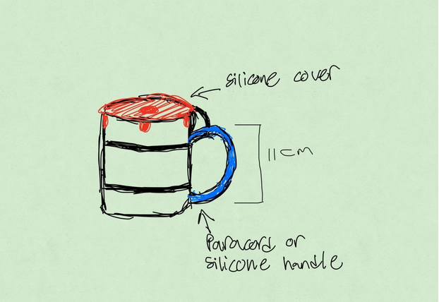
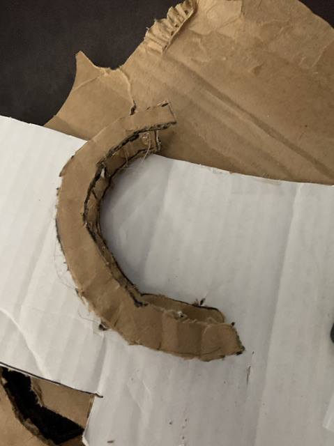
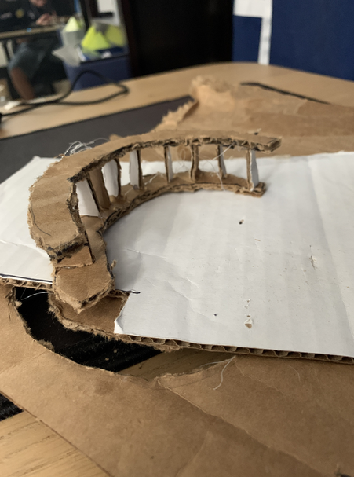
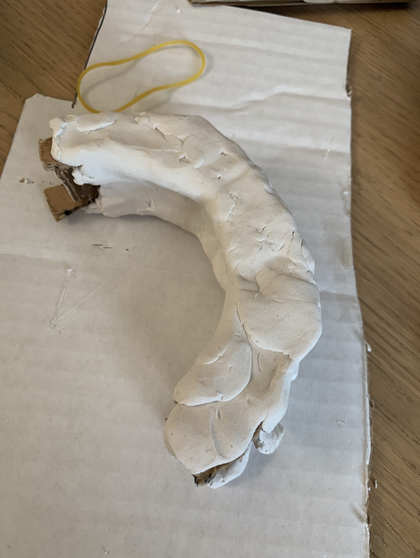
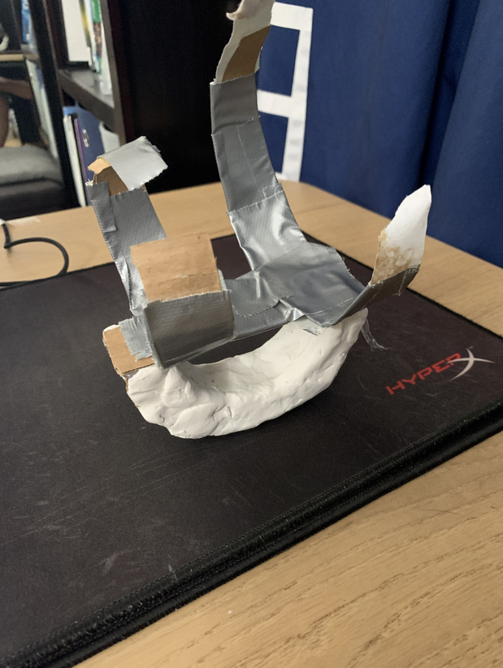
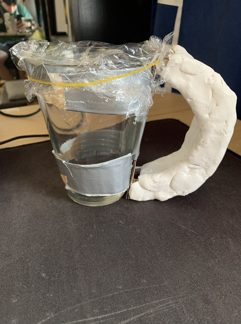

The Tremor Helper
Co-Designer
My co-designer is my grandpa, whose pseudonym will be L. He is 86 years old and currently lives in Seoul, Korea. He enjoys watching TV, hanging out with friends, and playing card games. One of his favorite games to play is poker. L started to notice hand tremors about 15 years ago. He would spill his drinks whenever the hand tremors occurred. L noted that when he tries to not spill his drinks, he tends to spill more than when he does not pay attention to his hand tremors.
Co-Designer Needs Statement
- He needs to be able to hold the cup steadily
- He needs to be able to make sure that the content inside the cup does not spill
- He needs to be able to make sure that he is able to hold the cup without dropping it
Product Requirements
- Waterproof
- Stable
- Easy to remove and clean
- Able to attach onto other cups easily
- Sturdy grip for stability
- Rotating handle to counteract shaking
- Light
- Around 9 centimeters tall
Initial Brainstorming Narrative
I wanted to help L drink from cups without having to worry about spilling his drink due to hand tremors. L had not tried nor was he aware of any tools to help him, so I had to do some research on preexisting solutions. All the products available today failed to satisfy my co-designer's need statements. One solution had a rotating handle that helped counteract the shaking, but it was not able to be attached to any other cups. Other solutions presented a sturdy grip with a strap to fit around any size cup, but they did not have any aspect that helped with shaking. My first idea consisted of a rotating handle attached to the top of suction cups with a rotating part. Upon review, we realized that this design was faulty. One of the product requirements, however, states that the product should be easily removable. For the suction cups to safely stick onto a cup and ensure that they did not fall off, the suctions had to be quite strong, making it difficult for the user to pull off. I then decided to combine the best features of the various products I found on the Internet. The concept I decided to move forward with has stretch bands to fit any cup size. It also has a rotating handle added onto the end of the bands to counteract the shaking.
Initial Prototype
Prototype Design Objectives:
- For my low-fidelity prototype, the main objective is to build a product that does not spill the liquid in the cup
- The prototype does not need to completely nullify the shaking, and the appearance is not a priority
- Once all of these objectives are made, I will know which steps I can take to improve my design
Assumptions
- Co-designer does not need any special type of grip shape
- Product will be used in his home and work space
Bill Of Materials
- modeling clay
- food wrap
- 3 rubber bands
- cardboard
- twine

Testing Plan
For testing, I plan on seeing how my product will hold up against shaking. My co-designer’s need statements focused on making sure that the liquid inside the cup does not spill, so I will see how much liquid is spilled when shaking is present.
Testing Results
After testing, I was able to see that my design was not steady. The handle was shaking constantly and was not rigid enough to provide support. Additionally, some liquid was pouring out from my adjustable cup cover. The cup handle, however, was the right size for my co-designer.
Conclusion: From my testing, I learned that I need to make the handle more rigid so that my co-designer can hold the cup steadily. I also need to make sure that it is comfortable to hold. Thus, I need to design a handle that is stable, but also comfortable to use.

Final Prototype
Due to constant material delay, I decided to build my final prototype with materials that were laying around my house. Here is what you need:
Bill of Materials
- 1 rubber band
- Duct tape
- Food Wrap
- Modeling Clay
- Cardboard
Build Instructions

Step 1: Cut out 2 cardboard handles 11 cm tall

Step 2: Using a rebar technique cut out small cardboard pieces and glue them in between the 2 handles

Step 3: Apply modeling clay around the handle to add more grip and comfort, and then connect the handle to a rectangular cardboard piece.

Step 4: Cut out bands of cardboard and attach duct tape on them to reinforce. Afterwards, connect the bands to the cardboard piece on the bottom of the handle.

Step 5: Wrap current prototype around cup and add food wrap on top. Use a rubber band to seal off the food wrap.

Test PlanIn order to test my product, I will first see how much liquid is spilled when shaking is present. As one of the need statements of my co-designer stated that the content inside the cup must be kept inside. Additionally, I use an accelerometer inside the cup to see how much my handle is reducing shaking. Once I am able to get into contact with my co-designer in person, I will ask him how comfortable he is holding the cup on a scale of 1-10.
ResultsAfter testing, I noticed that some liquid was still spilling. Because my cup cover uses materials that are not tight enough to seal off the liquid completely, some liquid spillage was expected. The product was stable and reduced some of the shaking from the hands. I still need to test how comfortable the grip is with my co-designer.
Future Improvements
Depending on which material I decide to move on with, I would like to change how I adjust the bands for the cup. If I decide to use silicone bands, I would like to implement a silt on one side of the band, so my co-designer can adjust to a cup of any size. On the other hand, if I use a paracord, I want to have a tightening string mechanism to loosen and tighten the paracord around any cup size. Once I am able to meet my co-designer in person, I want to use a modeling material to see the exact hand shape he makes when he grips a handle. In order to maximize his comfort when using my product, I need to make sure that the handle is fit to his exact hand shape.
Scalability
My product does not necessarily apply only to my co-designer. Some of the measurements were made to fit my co-designers needs, but if I can find a size that everyone is comfortable with, my product can apply to everyone. Silicone, which is a material that I will use, is safe and non toxic to humans and the environment. It is also common to find, so mass production will not be a problem.
Design Process Reflection
If I could go through the design process again, I would like to change the way I planned my project. I did not take into account my material orders being delayed or not coming at all in time. Once I realized that my materials would not come before the end of the course, I was put into a state of frantically trying to find a different solution. If I had properly managed my time for the worst cases possible, I could find a different solution to get materials without being under time pressure.